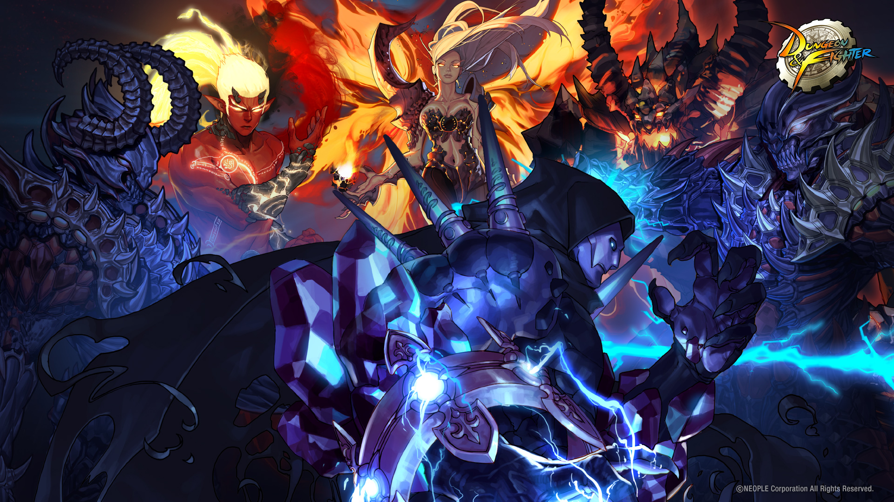
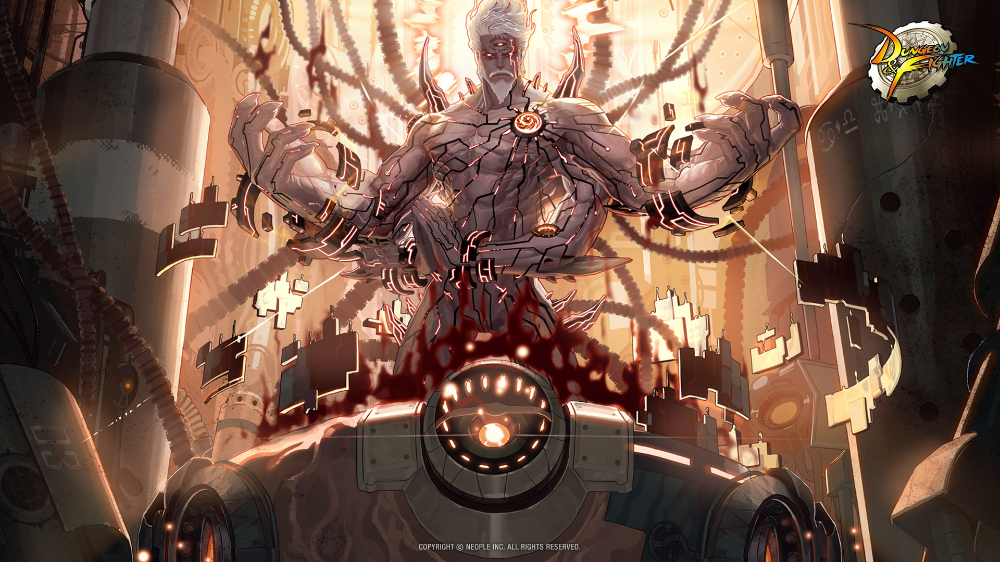
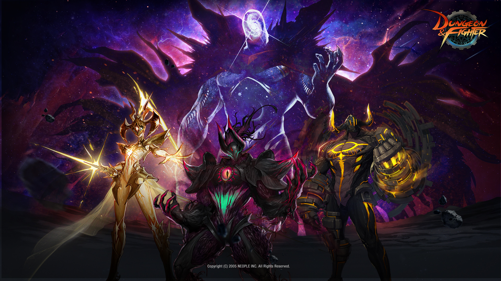

사도 : 불을 먹는 안톤
- 안톤 입장 조건
- LV 85 달성시 노블스카이 지역 퀘스트 전부 클리어
- 니엔 시거가 주는 퀘스트 [다른 차원의 안톤] 클리어
- 보스 정보
- LV 85 이상 입장 가능
- 난이도 : 보통
- 위치 : 노블스카이
- 특징 :
페이즈가 30페이즈가 넘는 국내 최초 최악의 난이도를 자랑했던 던전(보통 다른 게임은 5페이즈 이내)
일반 안톤에 한 던전에 네임드 셋 보스 하나 던전은 총 5개(네임드 15명 보스 5명;;;;)
레이드 안톤은 무려 20인이 동시 공략하면서 40분 이내에 클리어해야한다
당시 나왔을때는 크로니클이 대중적이였기 때문에 크로니클을 들고 안톤에 갔고 탈탈 털려서 왔다......
그러나 지금 모험가들은 에픽을 온 몸에 달고 있었고......
- 드랍 아이템
- 안토니움
- 응축된 안토니움
- 안톤의 영혼 조각
- 안톤 레이드 에픽
여담 :
'안톤'이 최종보스가 아니다.
안톤이라는 자동차를 운전하는 타르탄을 탄 '전능의 마테카'라는 자가 보스다
웃음소리가 이상해 하/하-하

사도 : 건설자 루크
- 루크 입장 조건
- LV 90 달성시 죽은 자의 성 지역 퀘스트 전부 클리어
- 메릴 파이오니어가 주는 퀘스트 [건설자 루크] 클리어
- 보스 정보
- LV 90 이상 입장 가능
- 난이도 : 어려움
- 위치 : 죽은 자의 성
- 특징 :
안톤 이후 출시된 실시간형 레이드
레이드 루크는 처음에 점을 보며 타로카드를 보여주는데 이를 통해 랜덤으로 나오는 보스가 각각 누구인지 유추가 가능하다
안톤 레이드는 레이드 장비를 주는 반면, 루크는 있는 에픽을 업그레이드를 시켜준다
안톤과 달리 루크는 나올 당시 90제 에픽을 달고 있는 모험가가 다수여서 패턴만 숙지한다면 클리어하는데 큰 지장이없었다
근데 진짜 너무 쉬웠다
이러한 이유로 하드 루크가 추가 되었고 어느 정도 레이드의 본질을 되찾았다
- 드랍 아이템
- 빛의 근원
- 어둠의 근원
- 모놀리움
- 정제된 테라니움
여담 :
안톤 레이드 상점에서는 장비를 파는것과 달리 루크레이드 상점에서는 (업그레이드)합성법을 판다
90제 에픽을 업그레이드 한다고 해 흔히 '업글픽' 이라고 한다
루크레이드 악세사리인 헤블론의 군주 세트와 이 업글픽을 모두 맞추는데 1년 반(!!)이 넘는 기간이 걸렸다
하지만 2달만에 전부위가 파밍가능한 할렘에픽이 더 좋다는 사실이 밝혀지는데......

핀드워
- 핀드워 입장 조건
- LV 95 달성시 이후 퀘스트 스킵 및 퀘스트클리어
- 아이리스가 주는 퀘스트 [전선으로] 클리어
- 보스 정보
- LV 95 이상 입장 가능
- 난이도 : 매우 어려움
- 위치 : 그란플로리스
- 특징 :
국내 최초 점령형 레이드
상대방의 전초기지, 레이더, 포탑등을 파괴하면서 버프를 얻거나 상대방에게 디버프를 준다
위치는 미드 탑 봇으로 나뉘며 탑 봇에 있는 중간보스 처치시 두 명의 최종보스에게 입장한다
미드에는 상대방의 몬스터와 또 다른 중간보스가 진격한다
이를 막아서 팀의 넥서스를 지키면서 플레이 해야하는 전략형 레이드 그 자체
다른 레이드와 달리 최종 보스의 인격체가 두 개로 나뮈어졌다는 설정 아래 최종 보스가 두 명이 등장하고,
다른 레이드와 달리 적을 '홀딩'해서 때리는 것이 아닌
상대방 일방적 공격 ==> 상대방 그로기 ==> 우리팀 일방적 공격 ==> 상대방 일방적 공격 ----
이러한 패턴이 돌아간다는게 이때까지의 모든 던전과의 차이점이다
루크 레이드와 비슷하게 테이베르스 에픽을 업그레이드 시키는 것이 이 레이드의 목적이다
- 드랍 아이템
- 반물질 입자
- 핀드워 카드 상자
- 테이베르스 업글픽
여담 :
이때까지의 완전히 새로운 메타로 15초간의 그로기 상태때 데미지를 넣는 방식이라 직업계급의 큰 영향을 끼치게 됬다
마을을 이동하며 방에 입장해 클리어 하는 방식 때문에 평소에 걸어다닐떄는 마을 이동속도가 적용된다
이 던전은 각 던전의 클리어 제한시간이 있는데 전체 클리어 제한 시간보다 이 때문에 더 골치 아프다
이 때문에 처음에 대부분의 공대가 핀드워를 클리어 하는데 최소 2시간 이상 걸렸다고 한다